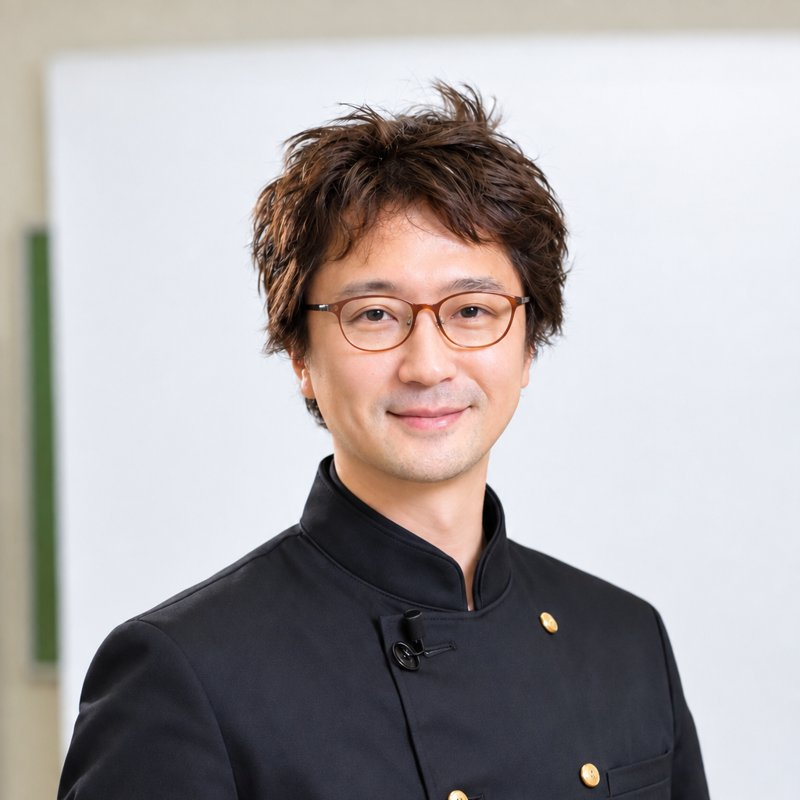

無料オンライン説明会 ／ 顔出しなし・聞くだけでOK
ジョージアで、日本人は
何で稼いでいるのか。
トビリシで日本食の店をやりながら、部屋探し・不動産・結婚式・会社設立まで手がけている店主が、現地の仕事とお金の話を、実例でそのまま話します。
会場オンライン（Google Meet）
参加費無料
時間約45分（質問の時間つき）
日程LINEでご案内
こんなことで迷っていませんか？
海外で暮らしてみたい。でも、現地で何をして稼げばいいのか分からない
英語が得意じゃないけど、それでも海外で仕事ってできるの？
ジョージアは「ビザなしで1年いられる」と聞いたけど、働くのは大丈夫？
興味はあるけど、最初の一歩をどう踏み出せばいいか分からない
説明会で話すこと
- ジョージアの今：ビザなし1年の滞在、2026年からの就労許可のルール、トビリシの生活費（家賃・食費の実際）
- 日本人の稼ぎ方の実例：飲食店、部屋探しと不動産の仲介、外国人の結婚式の手配、会社設立・口座開設のサポート、日本の仕事をリモートで続ける形
- 店主の失敗と、うまくいったこと：英語ができないまま始めて、どう仕事を取っているか
- トビリシ寺子屋（ノマド留学）の中身：営業中の店の本物の仕事を教材に、1か月で何を体験できるか
- 質問タイム：あなたの状況に合わせて、何でも答えます
聞いたあとに無理に申し込む必要はありません。合わないと思ったら、それも大事な答えです。希望する方には、説明会のあとに個別の相談（30分・無料）もできます。
話す人

三上恭平（オムライスランド／OMURICELAND LLC 代表）
2010年にオムライスの店を始め、オムライススタジアム2019北海道大会で優勝。調理師。2026年からジョージア・トビリシで「Japan Food Hub」の中に店を出し、現地で会社と銀行口座を作りました。今は店をやりながら、部屋探し・不動産・結婚式の手配・会社設立のサポートもしています。英語は得意ではありませんが、翻訳アプリと現地の仲間で仕事を回しています。

参加すると受け取れるもの
- LINE登録ですぐ：「ジョージア移住・起業 準備リスト」
- 参加した方に：説明会で使った資料
- 希望する方に：個別相談（30分・無料）
参加までの流れ
- 下のボタンからLINEで友だち追加
- トークに「説明会」と送る
- 次回の日程とMeetのリンクが届きます
よくある質問
知識や経験がまったくなくても大丈夫ですか？
大丈夫です。ジョージアがどんな国かという基本から話します。
顔出しや発言は必要ですか？
必要ありません。カメラもマイクもオフのまま、聞くだけで参加できます。
参加したら申し込まないといけませんか？
いいえ。説明会は無料で、聞くだけでも大丈夫です。
日本からでも参加できますか？
できます。日本の夕方の時間帯に開くことが多いです。日程はLINEでお知らせします。
説明会のあとに相談できますか？
はい。希望する方には30分の個別相談（無料）をLINEで予約できます。
開催概要
| 名前 | ジョージアで、日本人は何で稼いでいるのか（無料オンライン説明会） |
|---|---|
| 会場 | オンライン（Google Meet） |
| 参加費 | 無料 |
| 時間 | 約45分（質問の時間つき） |
| 日程 | LINEでお知らせします |
| 主催 | OMURICELAND LLC（トビリシ）／株式会社オムライスランド |